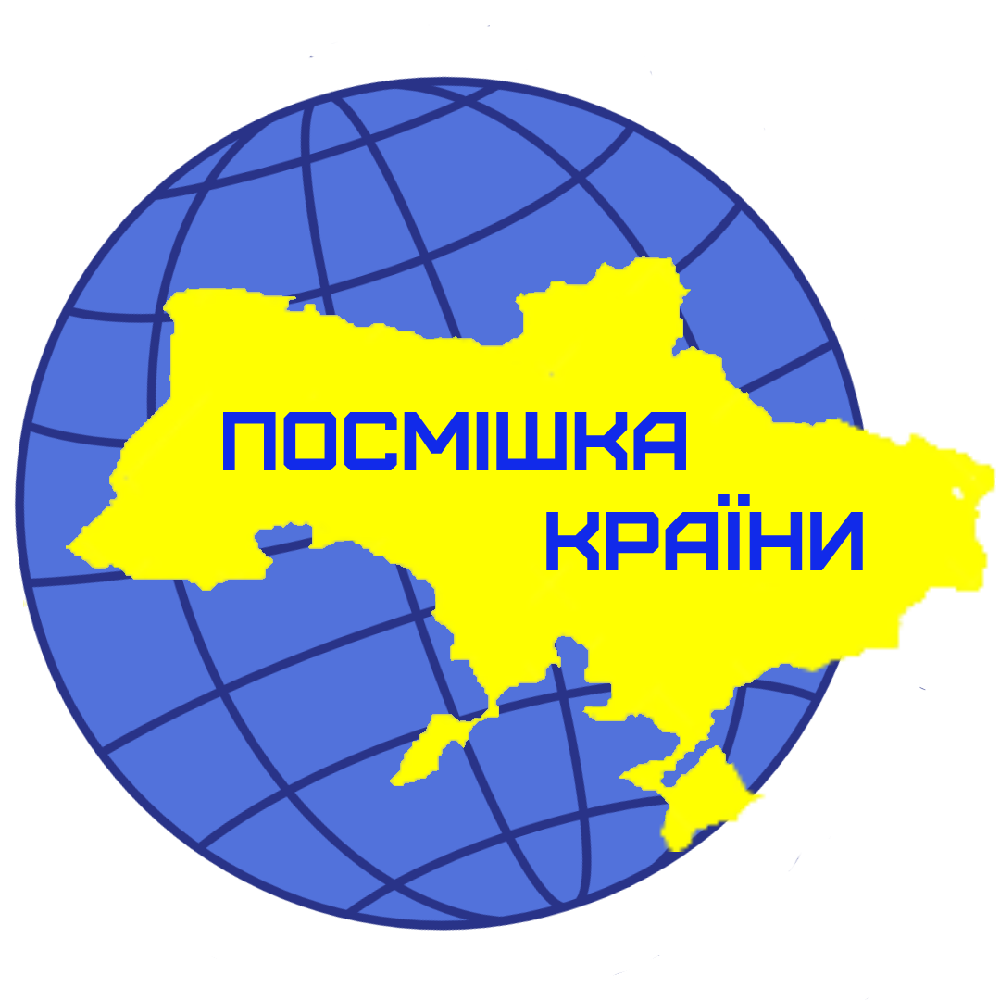
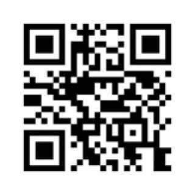

БЛАГОДІЙНА ОРГАНІЗАЦІЯ
БЛАГОДІЙНИЙ ФОНД "ПОСМІШКА КРАЇНИ"
 ЄДРПОУ 45027572
Дата та номер запису в Єдиному реєстрі юридичних осіб, фізичних осіб-підприємців та громадських формувань: 26.01.2023, 1001031020000053375
Види економічної діяльності:
88.99 Надання іншої соціальної допомоги без забезпечення проживання, н. в. і. у.
Контакти

Телефон:+38 067-938-68-09 (Viber, Telegram, Messenger)
Email:posmishka.krayini@gmail.com
Основною метою фонду є провадження благодійної діяльності та надання допомоги інвалідам, ветеранам та учасникам бойових дій, малозабезпеченим сім'ям, багатодітним сім'ям, дітям-інвалідам, дітям-сиротам, громадянам похилого віку, іншим соціально незахищеним категоріям населення та фізичним особам, які через своє фізичне, розумове, психологичне, матеріальне становище потребують соціальної підтримки та поліпшення стану їх здоров'я, внутрішньо переміщеним особам.
| АТ «ПУМБ» (UAH) | UA553348510000000026005197354 Код банку (МФО) 334851 |
| АТ КБ "ПриватБанк" (UAH) | UA913133990000026000010206110 Код банку (МФО) 313399 |
| (USD) | Beneficiary: BO "BF "SMILES OF THE COUNTRY" IBAN: UA553348510000000026005197354 Beneficiary bank : FIRST UKRAINIAN INTERNATIONAL BANK SWIFT BIC: FUIBUA2X Correspondent Banks: JPMorgan Chase Bank N.A SWIFT BIC: CHASUS33 Correspondent Banks: The Bank of New York Mellon SWIFT BIC: IRVTUS3N |